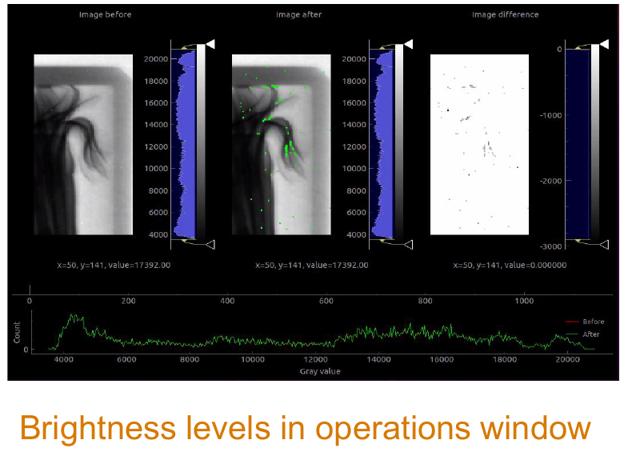
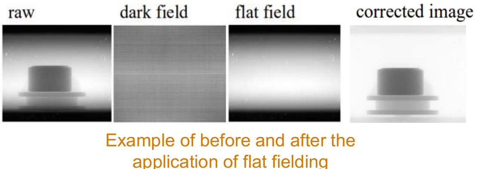

Improving the interface, correctness, and performance of the tool researchers use to turn raw neutron and muon radiographs into science.
Mantid Imaging is the imaging-focused companion to Mantid: it turns raw neutron and muon radiographs into corrected, science-ready images and 3D reconstructions. Where a spectroscopy workspace might be a single curve, an imaging dataset is a full stack, potentially thousands of 2D projections captured as a sample rotates in the beam, all of which need the same corrections applied before they're usable.
I worked on it during the same ISIS placement as my Mantid contribution, splitting time between interface improvements, image correction correctness, and performance.
Introduced the ability to apply image processing operations to a specific dataset rather than everything currently loaded, so users aren't forced to reprocess data they don't need to touch.
Added automatic brightness-level resets after flat fielding, so the visual feedback stays consistent without users needing to manually readjust it every time.
Implemented a mechanism to cancel the loading of large or incorrect datasets mid-process, instead of forcing users to wait out or restart the application.

Flat fielding corrects for variation in detector sensitivity and illumination, the kind of uneven brightness that has nothing to do with the sample and everything to do with the detector. I explored and contributed to this functionality, which meant understanding the correction itself, not just the code around it:
Each pixel is normalised against a dark-field reference (detector response with no beam) and a flat-field reference (response with an unobstructed beam), which cancels out fixed-pattern artifacts and illumination gradients that would otherwise show up as false structure in the final image.

The part that isn't on the poster: a lot of Mantid Imaging's operations, flat fielding included, get applied identically across every frame in a stack that can run to thousands of images. Run naively, that's the same expensive correction repeated one frame at a time. I worked on making that faster along two lines: parallelising batch operations, like flat fielding and filtering, across CPU cores so a stack processes many frames at once instead of sequentially, and reducing redundant computation by reusing shared per-stack values, like the flat and dark field references, instead of recalculating them for every single frame they're applied to.
Noting for accuracy: this section describes the general shape of the optimisation work rather than exact benchmarks, I'd want to pull the real before/after numbers from the codebase before quoting specifics in an interview.